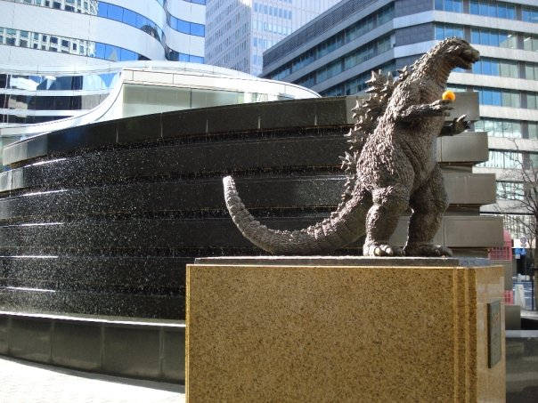

SE Asia - Summer 2013
photos :: blogEvan and I spent three months touring in Southeast Asia. We started with just two tickets to Cairns, and we got scuba certified, rode in a submarine, hiked around the Korean Island of Jeju, saw Angkor Wat, had a motorbike accident in Vietnam, and got stuck in a Filipino typhoon. Success!

Luxembourg - Spring 2013
We finally knocked off the last western European country on our lists: Luxembourg. As a special deviation after CHI 2013, we rented a car and drove both to get information from some distant relatives of mine in Metz, France, and to explore this tiny and improbable-seeming country.Toronto to New York - Winter 2012-2013
For a ridiculous New Year's Eve, we decided to run a 5k in the dark Toronto snow. The next morning, we set out on a quest to visit the Museum of Mathematics, newly opened in New York City. We stopped by Montreal and Boston on the way, and took time to visit the Makerbot Flagship Store in NYC, too. For research purposes, you understand.Florida Keys - Summer 2012
Although I had been several times, my husband never had, so we took the opportunity to tag along with my parents for two weeks of snorkeling, fishing, and lobster-catching.Arizona - Winter 2012-2013
We hiked down the Grand Canyon to the bottom on New Year's Eve and emerged on New Year's Day. We carried a bottle of champagne with us down to the bottom, much to the amusement of the other folks staying in our campground. While in the area, we crossed off such bucket list items as flying in a hot air balloon.
The Little Grand Canyon - Fall 2012
We actually ran a marathon. After training for some months with our friends, we decided to use the purchase of racing tickets as a forcing function that would convince us to do it. So, we flew to Salt Lake City and ran through the Little Grand Canyon amid fossilized dinosaur footprints and petroglyphs.Vancouver to Portland - Summer 2011
Continuing our cycling theme, we decided to do a smaller trip from Vancouver to Portland. We made some new friends along the way in rural Washington, and cultivated our love of fine beers. :)Bike to the Earth (Copenhagen->Lisbon->Istanbul) - Spring-Fall 2010
photos :: blog :: mapWith ~40 lbs. of luggage each and an absurd dream to bike at least 10,000 km, Evan and I set out on a cycling trip from Copenhagen to Portugal via Istanbul. It was a chance to find ourselves (and each other) after completing our bachelors' degrees and before setting into the "real world". We discovered the incredible depths of human kindness and our own tenacity.

Switzerland - Winter 2010
blogWhile I lived in Geneva working for CERN, I had the opportunity to visit several places I'd missed during my time in Germany. I began preparing for the bike trip with my meagre 10km commute every morning. I did the bungee jump from the opening sequence of Goldeneye...

Germany and Surrounding - Summer 2009
photos :: blogMy first visit to Europe was while I was doing NLP research with TU Darmstadt. I had some money left from Google

Japan - Winter 2008-2009
photosWe had some money left after working for Google, so Evan and I decided that we should head to Japan. This destination was literally chosen via the Python utility random.choice in a contest between, I believe, it, Brazil, and Madagascar.
California - Summer 2009
blogDuring the summer of my Google internship, I took the opportunity to get to know California. There was skydiving, convertible renting, jet skiing, and any ridiculous thing we could think of.